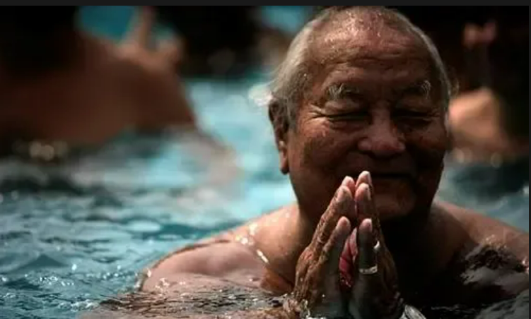

訣竅部的修法是非常、非常嚴肅的…
-
非原創~轉載微信公眾號
-
現在很多人都急於進行大圓滿竅訣竅部的修法，並說，「哦，有一個殊勝的托噶修法！我們必須要找到它。」很多人要求我教導他們托噶。當然如果有人真的準備好了並且條件完備，我是會教托噶的；但如果他並不具備這樣的條件，即使我教授了托噶，對於這個人也沒有任何利益。而且，如果我沒有以正確的方式給予傳承的話，也會為自己的修行製造問題。我自己或許無法獲得證悟──我至今還沒有證得虹光身，只有一個物質身體，是個普通的人而已。我想要證得虹光身而且了解如何能夠證得，因為我精確地知道如何做以及要修什麼方法。我們不應該四處宣揚和談論這些修法。往往當人們發現一些他們認為有意思的東西時就會複製、記錄、談論並評價它，「哦，這是一個殊勝的方法。」他們並不了解這個修法是需要傳承的。他們認為事情是以機械的方式進行的。如果車子壞了，你們知道如何以機械的方式修好它，你們能夠做到，但教法的教授並不是這樣運作的。第一重要的是傳承，第二是它的正確的實修方式，這樣你們就會了解方法是哪一個並且從它獲益；這就是為什麼上師和修行者都會對此保密的原因。這也是為什麼它被稱為訣竅部，了解這個要點十分重要。所以，第一部被稱作卻尼阿松（chonyid ngonsum）,是指看到或具有法性的真實體驗。
-
這是非常重要的根本方法，所以你們必須要非常嚴肅地對待這個修法和教法。如果你們不夠嚴肅的話，就會破壞和毀掉自己，而不是其他人。這是指除非必要你們一定不要討論它。當然，如果上師問你們一些事，你們是可以談論的，那些一起接受過這個教法的同修之間也是如此，因為他們會在一起彼此談論，都獲得了這個傳承。但在修行者之間當你們要彼此談論時，必須是以一種嚴肅的方式進行，不能好像是大家到了酒吧里，或者某個酒屋，半醉的狀態之中說，「第一個和第二階段怎麼回事？
-
我記得在我們前往岡底斯山的路上，有一個人有一些關於托噶某些修法的筆記，他不斷要求我教托噶。在他多次堅持之後我說，「抱歉。對我而言這個教法是非常嚴肅的事情，如果有這樣的可能性和條件，我肯定會了解對我來說這是教授它的適當時機。你沒有必要一直堅持。旅途中某個時間，我發現很多人正在悄悄地把這些修法都記下來；我甚至聽到有一天他們在乘坐大客車旅行時，有人正在透過擴音器朗讀這些筆記，車上所有人都在聽，包括漢族的嚮導。當我聽到這些時非常沮喪，不是為我自己，因為關於托噶我沒有做任何事情，而是那些人正在給自己製造麻煩。如果你們做了這樣不尊重傳承、不尊重教法的事情，就會為自己製造非常重的業障，這就是為什麼我們必須在教法上非常精確的原因。
-
同樣的原則也適用於大圓滿仰滴，黑關修法。這個修法中我們主要有七個階段的教授，上師將這些階段逐一教授。弟子修習，在獲得體驗後接受第二階段教授，然後繼續修習之後接受第三階段，如此進行。同時，要進行教授，上師必須具有精確的體驗，必須了解體驗是怎樣的、特定的體驗以及接受教法的弟子的特點，以這種方式上師可以傳授第二或者第三階段；之後弟子便能夠真正在修法中取得進步。關於這些修法人們甚至有在技巧上涉及的意圖。例如在美國的奇耀營我們有一個黑關房，有人問我，「那些已經完成第一、二、三階段的人可以跟新人講解這些修法嗎？」這有什麼意義？這只是就技巧上而言，我非常了解沒有人能像我所做的那樣做。對我來說總是要一個個地傾聽人們講述他們在修法上的進展是非常繁重的事情，但如果我們修習這個修法，就必須要非常嚴肅地進行。這個修法的目的是證悟，而不只是好奇。對我而言，訣竅部的修法是非常、非常嚴肅的，因為我對證悟和獲得完全的證悟感興趣，又怎麼會毀掉自己和自己的修行之道呢？所以，大家必須要意識到這一點。這是為什麼我總是請修行者不要互相爭鬥，不要彼此生氣，因為這會為我們的證悟製造很多問題和障礙。這是與傳承相關的非常重要的一點。
返回主頁